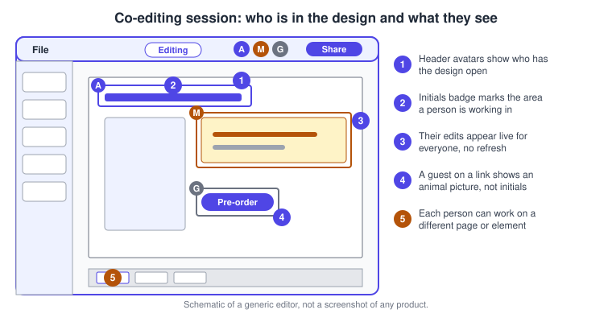
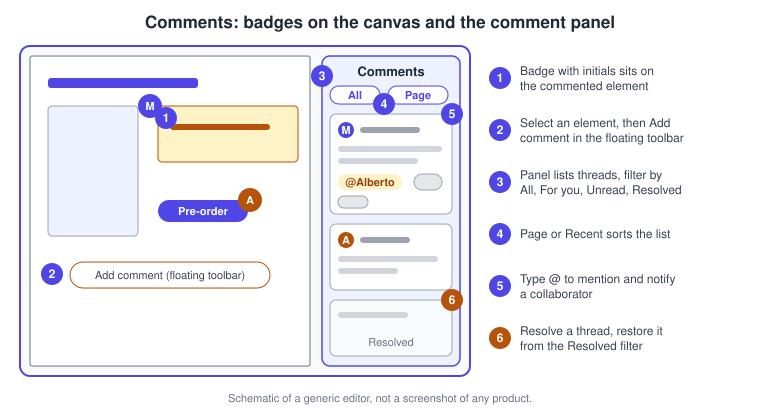
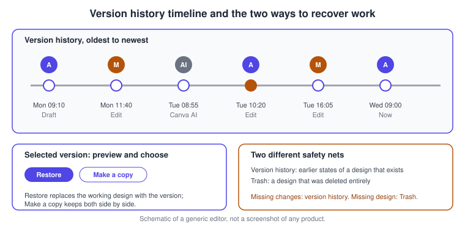
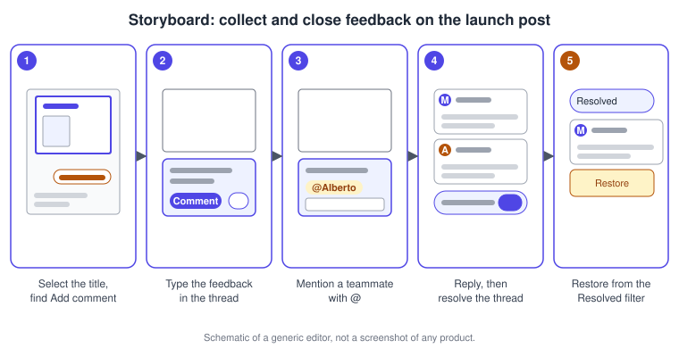
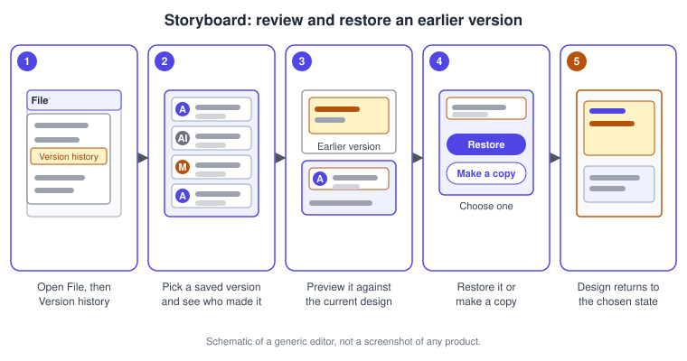

Collaboration, Comments and Version History
|
This content was generated with the assistance of AI and should be verified against the official documentation before being relied on in production. |
This page was checked against the official Canva Help Center on 2026-11-07. It covers the three tools a team uses to work on one design together: live co-editing through sharing, comments (with mentions, reactions and resolving), and version history for going back in time. Co-editing, comments and mentions are available on every plan, Free, Pro, Business, Enterprise, Education and Nonprofits, although some details differ: guests who open a link must sign in to Canva to comment, and a Pro account cannot invite people to a team while sharing (the Help Center points to Canva Business for that). Version history is limited to paid and education plans; the Help Center article lists Canva Pro, Teams, Business, Education and Nonprofits and states that Free users do not have it. Canva Business replaced Teams for new sign-ups on 2025-10-30; existing Teams accounts keep their plan. Prices are not repeated here; they are published at https://www.canva.com/pricing/. All the features described are generally available.
Canva is a continuously deployed service, so icon shapes and labels move between releases and between the browser, the desktop app and the mobile apps. This page describes controls by name and its drawings are deliberately schematic: they are original sketches of a generic editor and not screenshots.
The running example is Bookshelf, the book catalogue and reading-list app designed in the Figma sub-section. Its launch campaign is built in Canva across the pages of this sub-section. Here the "Book of the week" Instagram post gets a review round with a teammate, is edited live by two people, and is rolled back when a change turns out to be a mistake. Permission levels and link settings are described in depth on Sharing and Permissions; this page concentrates on what people do once they are inside the design.
Real-time co-editing
Canva designs are edited in the cloud, so several people can work in the same design at the same time and see each other’s changes as they happen, without refreshing and without merging files. To start, the owner or someone with edit access selects Share in the editor and either adds people by email or changes the link setting from Only you can access to Anyone with the link and picks a permission: Can edit, Can comment or Can view. The permission can be changed at any time afterwards.
While people are in the design:
-
Their avatars appear in the header, so you can see who has the design open.
-
Once collaborators open the design, the part they are working on is highlighted with their initials.
-
A person who opens a link without being signed in to Canva appears with an animal illustration instead of initials or a photo.
-
The header mode switcher moves you between Editing, Commenting and Viewing. It is available for all design types in the full editor, with an extra Suggesting mode in Canva Docs, and it is not offered in the editor embedded in the homepage.

What guests can and cannot do
A guest is someone who opens a link that allows editing without being a member of your team. According to the Help Center, a guest can view, present and play the design, make edits (using the side panel to add, edit or delete elements, text and pages), copy the link you sent, see comments and see live updates from other users. A guest cannot upload content or files, add, edit or resolve a comment without signing up or logging in to Canva, share the design beyond copying the link, change the link permissions, make a copy, print, or publish and download the design. If you do not want a guest to keep editing, change or remove the link permission.
Working well together
-
Split the work by page or by element. The initials outline shows where someone is, so avoid editing the same text box at the same time.
-
Use Commenting mode, or the Can comment permission, for reviewers who should give feedback but not change the design.
-
Use a team or a shared folder for designs several people open regularly, so they do not depend on a link that can be forwarded.
-
Remember that edits are live. If someone makes a change you did not want, version history (below) is the way back.
Comments
A comment is a note attached to an element, a piece of text or a page. Comments are different from presenter notes: notes belong to presentations and are shown in Presenter View, whereas comments are a conversation between collaborators about the design.
Add and format a comment
Select the element, text or page, choose the Add comment icon in the floating toolbar that appears near the selection, type the comment and select Send. Comment text can be formatted: select the text or choose Open Formatting, then pick bold, italic, strikethrough, a hyperlink, a quote or a list. The shortcuts are Command + B, Command + I and Command + Shift + S on macOS, and Ctrl + B, Ctrl + I and Ctrl + Shift + S on Windows.
Comments appear on the canvas as floating badges with the commenter’s initials or profile photo; in Canva Docs the commented text is highlighted instead.

View, filter and sort
Select the comment icon at the top of the design to open the comment panel, then use the filter control (it shows the current page by default) to change what you see.
| Filter | What it shows |
|---|---|
All |
Every comment on the design |
For you |
Comments in which you were tagged |
Canva AI |
Chats with Canva AI |
Unread |
Comments you have not read |
Suggestions |
Suggestions added to a document (Canva Docs only) |
Your comments |
Only the comments you wrote |
Resolved |
Threads that were resolved |
Comments can be sorted by Page or by Recent. The same panel can be expanded or hidden to leave more room for the canvas.
Hide the badges
If the badges get in the way while you design, open File, then Settings, and clear Show comment badges. Select the option again to bring them back. Hiding comments is not available in Canva Docs.
Edit, delete and resolve
Hover over a comment in its thread and select More to edit or delete it. Only design owners can delete comments written by other users. K-12 students cannot edit or delete their comments; by default only school team admins and teachers can. To resolve a thread, hover over the comment and select the Resolve icon. A resolved thread leaves the active list; to bring it back, open the comment panel, choose Resolved in the filter, and select the Restore icon next to the comment.
Reactions and links to comments
Reactions let a reviewer acknowledge a comment without writing a reply: select the emoji icon on the comment and pick an emoji, or press Shift + : while in comment mode to open the emoji picker. To point someone at one comment, select More on that comment, choose Copy link, and send the link. The person needs comment or edit access to the design; otherwise they are prompted to request access.
Mentions and notifications
A mention tags a collaborator so that they are notified and can find the request later under the For you filter. There are two ways to mention someone.
-
In the design: type @ or /mention on the page, select or type the person’s name, and choose Share this design if they do not have access yet, or select their name tile and choose Send notification if they already do. To remove a mention, select it and press Delete or Backspace.
-
In a comment: choose Comment in the floating toolbar, select Mention someone or type @, pick the person, and submit the comment.
Tagged people are notified by email and on their Canva homepage. You can mention only people who already have access to the design, so grant permission in the sharing settings first. If a mention does not appear, refresh the page. In Canva Sheets, only one user can be mentioned in a cell.
Ask Canva edits next to comments
Reviewers often ask for changes such as "make this shorter" or "give it a quieter background". Instead of leaving the request for a person, you can hand it to Canva AI. Select the element or page, choose Ask Canva in the editor toolbar, which opens Canva AI in the side panel, and describe the change; the requested edits are applied to the design automatically. For a page, Canva also offers prompt suggestions such as Design this page, Generate background and Create a layout. Ask Canva uses your monthly AI allowance only when the request uses a premium AI feature; the Standard, Premium and Ultra tiers are explained on Plans, Pricing and AI Allowance and the assistant itself on the Canva AI assistant page.
On Canva Free and Canva Education the main AI entry point in the editor is Canva AI in the side panel and the Ask Canva entry does not appear in the toolbar. If neither is available, the Help Center suggests opening Canva AI from the homepage side menu; it may be missing for your language or region, or switched off by an administrator on school, team and Enterprise accounts.
Mentioning @Canva inside a comment to request edits is no longer how this works: the Help Center states that access moved to Ask Canva and the Canva AI side panel. Guides written for the earlier Ask @Canva flow therefore describe a step that no longer exists. Edits that Canva AI makes are recorded in version history under a generic Canva AI label, so they can be reviewed or reversed.
Version history
Version history is the editor’s time machine. Open the File menu and choose Version history to see the saved versions of the design, select a version to compare it with the current design, and then either Restore it or Make a copy of it. Avatars next to each saved version show who edited it, which makes it easier to track collaboration, restore the changes of a specific teammate, or follow student contributions in a classroom.
Key facts from the Help Center:
-
You can restore up to 1,000 previous versions, with no time limit on how long versions are kept.
-
You must be the design owner or have edit access. People with view or comment access cannot see version history.
-
The full feature is available to Canva Pro, Teams, Business, Education and Nonprofits users. Free users do not have it, and it is not offered when you design on a partner website through the Canva Button.
-
In a document set to offline, select the icon in the menu bar above the editor and choose Open version history.
-
Entries labelled Canva AI appear when AI features are used in a design. They use a generic label rather than a tool name and can look like duplicates beside your own edits, but they can be previewed, restored or copied like any other version.

Version history or Trash
The two recovery tools solve different problems. Version history restores earlier states of a design that still exists. Trash recovers a design that was deleted entirely from your account. If you have lost some changes, use version history; if the whole design is missing, check Trash, and see Projects, Folders and File Management for finding and restoring designs. If you cannot see old versions, the usual causes are: the version is older than what is stored, you are on the wrong team or account, you only have view or comment access, or the design was made on a partner website rather than in Canva.
Desktop and mobile differences
Comments, mentions and version history exist in the browser, the desktop apps and the mobile apps, but the Help Center documents many steps separately for desktop and mobile. On a phone the mode switcher sits behind the more icon of the header, and the floating toolbar shows Add comment after you select an element. The Help Center documents version history steps for both desktop and mobile. Always check the Mobile tab of the article when a control is missing. See Desktop, Mobile and Offline for the broader differences.
Procedures on the Bookshelf campaign
Run a review round on the launch post
-
Open the Bookshelf Book of the Week Instagram post and select Share, then add the reviewer by email with the Can comment permission.
-
Ask the reviewer to open the post and select the title text, then choose the Add comment icon in the floating toolbar.
-
Type the feedback, for example that the title should be shorter, and select Send. Use Open Formatting when you want bold or a list.
-
Type @ followed by your name in the comment to tag the owner, then select Submit comment.
-
Open the comment panel, choose the For you filter and read the tagged comment; reply in the thread.
-
After you change the title, hover over the comment and select the Resolve icon.
-
If the thread was resolved too early, choose Resolved in the panel filter and select Restore.

Edit the carousel together
-
Open the Bookshelf Launch Carousel design and select Share.
-
Add your co-designer by email with the Can edit permission, or set the link to Anyone with the link and choose Can edit, then select Copy link.
-
Ask the co-designer to open the design. Their avatar appears in the header and the area they work in is outlined with their initials.
-
Agree who owns which page, for example slides 1 to 3 for you and slides 4 and 5 for the co-designer.
-
Watch the changes arrive live and switch to Commenting mode when you only want to review.
-
When the work is done, change the link permission back to Can view or remove it.
Restore an earlier version of the post
-
Open the Bookshelf Book of the Week post after a change that should not have been made.
-
Select File, then Version history.
-
Select the saved versions one by one to compare them; use the avatar next to each to see who made it, and look for the entry labelled Canva AI if an AI edit was involved.
-
Select Restore to return to the version you are viewing, or Make a copy to keep both.
-
If the whole design is gone rather than a change, leave version history and recover it from Trash instead.

Common pitfalls
-
Mentions only work for people who already have access. Share the design first, then mention.
-
A guest who is not signed in can see comments but cannot add, edit or resolve them.
-
Only design owners can delete other people’s comments; resolve a thread instead of deleting it so the history stays.
-
Version history needs ownership or edit access and a plan that includes it; view and comment access cannot open it.
-
Restoring replaces what you are viewing with an older state; use Make a copy first if you are unsure.
-
A Canva AI entry in version history is not a duplicate of your own edit; preview it before restoring.
-
Version history cannot bring back a deleted design; use Trash for that.
Where older guides are outdated
Books and tutorials written before the AI changes describe a different comment flow. The table lists statements that no longer hold and when each changed.
| Older statement | Current behaviour | Date |
|---|---|---|
Mention @Canva in a comment to request an AI edit |
Select Ask Canva in the toolbar, which opens Canva AI in the side panel; on Free and Education the side panel is the main entry |
Documented in the Help Center on 2026-11-07 |
Version history is available to everyone |
Free accounts do not have version history; it is for paid and education plans, up to 1,000 versions |
Checked 2026-11-07 |
Teams is the paid collaboration plan |
Canva Business replaced Teams for new sign-ups; existing Teams keep their plan |
2025-10-30 |
Recent changes
-
2025-10-30: Canva Business replaced Canva Teams for new sign-ups.
-
2026-04-16: Canva AI 2.0 launched as a research preview; the Help Center now describes Ask Canva as opening Canva AI in the side panel, and states that @Canva can no longer be mentioned in comments.